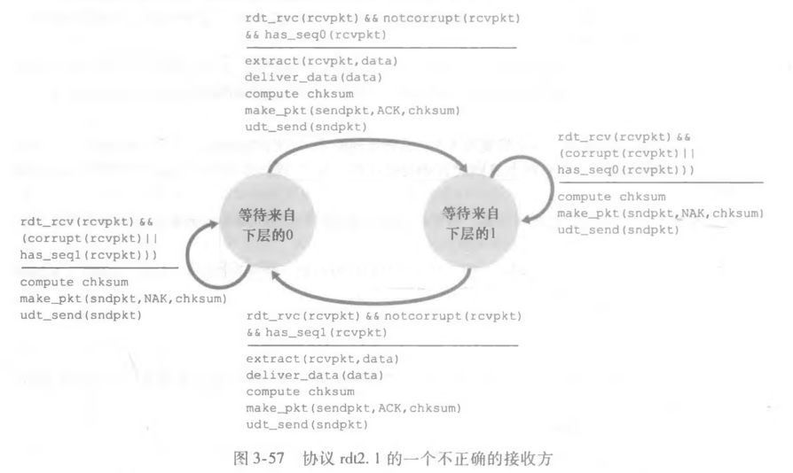

计算机网络笔记（三）- 传输层
计算机网络-传输层知识点
传输层服务的基本理论和基本机制：
- 多路复用/分用
- 可靠数据传输机制
- 流量控制机制
- 拥塞控制机制
典型传输层协议：
- UDP：无连接传输服务
- TCP：面向连接传输服务
传输层协议提供面向端系统上运行的应用的逻辑通信机制，实现端到端的数据传输。代表从应用的角度上看，端直接互相连接。
运输层协议将应用层信息拆分为小块，在每小块前添加头部信息，构成运输层段。
- 发送方：将应用递交的消息分成一个或多个段向下传给网络层。
- 接收方：将接收到的段组装成消息，并向上交给应用层。

为何需要数据分段？
链路层具有MTU（最大传输单元，Maximum Transmission Unit，MTU），这限制了链路层封装完毕后的帧不能找过一定长度（以太网为1500字节），因此需要在传输层开始进行分段。
传输层位于网络层之上，依赖于网络层服务，对网络层服务（可能的）加强，提供应用进程之间的逻辑通信机制。
常用传输层协议
-
TCP
- 可靠（reliable data transfer）、基于连接
- 拥塞控制
- 流量控制
- 连接建立
-
UDP：
- 不可靠、无连接
TCP与UDP都通过段首设置校验码提供错误检测机制。
两种服务都不提供延迟和带宽的保障
复用和分解
多路复用/分用机制将客户端之间的连接扩展为进程之间的连接。
在接收主机分解：将运输层报文交给正确的套接字（一到多，向上）。
在发送主机复用：从多个套接字接收数据，从首部封装数据（多到一，向下）。

分解工作方式
- 主机接收到IP数据报（datagram）
- 每个数据报携带源IP地址、目的IP地址，承载一个传输层的段。
- 每个段携带源端口号和目的端口号。

- 主机使用IP地址 &端口号将段定向到适当的套接字

无连接分解
UDP的Socket用二元组 （目的IP地址，目的端口号） 标识
当主机收到UDP段：
- 检查段中的目的端口号
- 将UDP段导向绑定在该端口号的Socket。
来自不同源IP地址和/或源端口号的IP数据包被导向同一个Socket。
面向连接的分解
TCP的Socket用四元组标识
- 源IP地址
- 源端口号
- 目的IP地址
- 目的端口号
接收端利用所有四个值将段导向Socket。
服务器可能支持并行的多个TCP Socket。Web服务器对每个连接的客户机具有不同套接字。

思考题
- P188 R8
假定在主机C端口 80上运行的一个Web服务器。假定这个Web服务器使用持续连接，并且正在接收来自两台不同主机A和B的请求。被发送的所有请求都通过位于主机C的相同套接字吗？如果它们通过不同的套接字传递，这两个套接字都具有端口 80吗？讨论和解释之：
- 不是，不同主机的请求会通过不同的套接字访问
- 是，都具有端口80。持续连接时使用面向连接的分解，其标识符为四元组，虽然目的端口相同，但是源不同，因此不同连接有相同目的端口。
- P189 P1
假设客户A向服务器S发起一个Telnet会话。与此同时，客户B也向服务器S发起一个Telnet会话。给出下面报文段的源端口号和目的端口号:
a. 从A向S发送的报文段。
b. 从B向S发送的报文段。
c. 从S向A发送的报文段。
d. 从S向B发送的报文段。
e. 如果A和B是不同的主机，那么从A向S发送的报文段的源端口号是否可能与从B向S发送的报
文段的源端口号相同？
f. 如果它们是同一台主机，情况会怎么样？
a. A 23，S 80
b. B 23，S 80
c. S 80，A 23
d. S 80，B 23
e. 可以，因为源IP不同，四元组其他内容相同，依然被表示为不同连接
f. 那么两个会话实际上在一个连接中进行
- P189 P2
考虑图3-5。从服务器返回客户进程的报文流中的源端口号和目的端口号是多少？在承载运输层报文段的网络层数据报中，IP地址是多少？
- 源：80。目的：发送给A的为26145，发送给C的为26145和7532
- 发送给A的为A，发送给C的为C。
UDP协议
UDP协议（User Datagram Protocol）。
特点：
- 只有最基本的功能
- 多路复用/分用
- 简单的错误校验机制（没有错误恢复）。
- UDP段可能丢失或失序到达。
- 无连接，发送方接收方不需要握手，每个UDP段的处理独立于其他段。
优势：
- 无需建立连接，减少延迟
- 实现简单，无需维护连接状态
- 头部开销少（8字节）
- 没有拥塞控制，将尽可能快的传输
常用于流媒体应用，特点：容忍丢失，速率敏感。常见UDP应用：DNS、RIP（路由表更新），SNMP（简单网络管理协议）。使用UDP协议应用层可以自行增加差错恢复。
报文段格式
- 源端口号、目的端口号（共32字节）
- 长度，错误校验和（共32字节）
- 数据

校验和（check sum）
目的：检测UDP段在传输中是否发生错误（如位翻转）
发送方
- 将段的内容视为16-bit整数
- 校验和计算：
- 计算所有整数的和
- 若存在进位，加在最后一位
- 将得到的值按位求反
- 放入校验和字段

接收方
- 计算所收到的段的校验和
- 将其与校验和字段进行对比
- 不相等：检测出错误
- 相等：没有检测出是错误（但可能有错误）
思考题
- P189 P3
UDP和TCP使用反码来计算它们的检验和。假设你有下面3个8比特字节：01010011, 01100110,01110100.这些8比特字节和的反码是多少？（注意到尽管UDP和TCP使用16比特的字来计算检验和，但对于这个问题，你应该考虑8比特和。）写出所有工作过程。UDP为什么要用该和的反码，即为什么不直接使用该和呢？使用该反码方案，接收方如何检测出差错？ 1比特的差错将可能检测不出来吗？ 2比特的差错呢？
- 01010011+01100110=10111001
10111001+01110100=100101101->00101101+1=00101110->11010001- 因为反码和不管系统是大端小端，使用算法都可以直接验证。用原码或补码求和，结果可能不同。
- 接收方计算完毕校验和后与校验和字段比对，若不同则有差错。
- 都可能检测不出来。即使校验和相同也不一定没有错误。
- P189 P4
a. 假定你有下列2个字节：01011100和01100101这2个字节之和的反码是什么？
b. 假定你有下列2个字节：11011010和01100101这2个字节之和的反码是什么？
c. 对于（a）中的字节，给出一个例子，使得这2个字节中的每一个都在一个比特反转时，其反码不会改变。
a. 01011100+01100101=11000001->00111110
b. 11011010+01100101=100111111->00111111+1=01000000->101111111
c. 例如最低位反转，有 01011101+01100100=11000001->00111110
可靠数据传输
为了使数据传输具有可靠性，我们需要在不可靠服务的基础上封装可靠服务。
封装之后，执行传输的流程如下：
- 应用层调用
rdt_send()将数据交付给rdt - rdt调用
udt_send()，在不可靠的信道（IP协议）上传输数据 - 接收方使用
rdt_rcv()处理数据 - 最后使用
deliver_data()向上层应用交付数据
不可靠信道的特点决定了可靠数据传输协议 (rdt) 的复杂性
使用有限状态机FSM 描述rdt。
Rdt 1.0：可靠信道上的可靠数据传输
假设：
- 无比特差错
- 无分组丢失，分组按序到达
双方都只有一个状态，仅负责打包与解包。

Rdt 2.0：产生位错误的信道
假设：
- 有比特差错
- 无分组丢失，分组按序到达
如何错误中恢复？
- 确认机制（ACK）：接收方显式地告知发送方分组已正确接收
- NAK：接收方显式地告知发送方分组有错误
- 发送方收到NAK后，重传分组
核心：检错，反馈（ACK，NAK），重传。
使用停等协议，发送方发出一个分组，等待接收方响应之后再继续发送。
发送方：
- 状态一（初始状态）：等待调用
- 若接收到上层发送请求，打包并发送，转移到状态二
- 状态二：等待反馈
- 若接收到下层包：
- 若得到ACK，返回到状态一
- 若得到NAK，重新发送包
- 若接收到下层包：
接收方：
- 状态：等待下层调用
- 若发现有错误，反馈NAK
- 若无错误，解包交付到上层，反馈ACK

缺陷：如果ACK/NAK受损，发送方没有处理机制（不能直接重传，可能导致重复）
Rdt 2.1和2.2
Rdt2.1
应对ACK/NAK受损，状态需要记住一位序列号0/1，当受损时直接重传。
发送方：使用序列号0、1标记分组。每种序列号各有两个状态。
- X序列号状态一：等待调用
- 若接收到上层发送请求，打包并发送，转移到X序列号状态二
- X序列号状态二：等待反馈
- 若接收到下层包
- 若反馈包损坏或反馈NAK：重传包
- 若反馈未损坏且反馈ACK：转移到非X序列号状态一
- 若接收到下层包
接收方：分别等待序列号0、1分组的数据
- X序列号状态：等待下层调用
- 若发现有错误，反馈NAK
- 若发现无错误，但序列号为非X：未接受到之前发送的ACK，重新发送ACK
- 若无错误且序列号正确，解包交付到上层，反馈ACK，转移到非X序列号状态


思考题
- P189 P6
考虑我们改正协议rdt2.1的动机。试说明如图3-57所示的接收方与如图3-11所示的发送方运行时，接收方可能会引起发送方和接收方进人死锁状态，即双方都在等待不可能发生的事件。

这张图接收方的区别是，当损坏或序号不正确时都发送NAK。
假设发送方发送序号为0的包，接收方正确接收但ACK反馈受损，此时接收方将等待序号为1的包，但发送方接收到受损消息后重传序号为0的包，接收方发送NAK，此后接收方与发送方将重复重传序号为0的包并返回NAK的过程，进入死锁。
Rdt2.2
无NAK消息协议。
接收方通过ACK告知最后一个被正确接收的分组。在ACK消息中显式加入序列号。
发送方：使用序列号0、1标记分组。每种序列号各有两个状态。
- X序列号状态一：等待调用
- 若接收到上层发送请求，打包并发送，转移到X序列号状态二
- X序列号状态二：等待反馈
- 若接收到下层包
- 若反馈包损坏或反馈ACK非X：重传包
- 若反馈未损坏且反馈ACKX：转移到非X序列号状态一
- 若接收到下层包
接收方：分别等待序列号0、1分组的数据
- X序列号状态：等待下层调用
- 若发现有错误，或序列号为非X：重新发送ACK非X
- 若无错误且序列号正确，解包交付到上层，反馈ACKX，转移到非X序列号状态


Rdt 3.0
假设：
- 有比特差错
- 分组可能失序到达
方法：发送方等待合理时间
- 如果没收到ACK，重传
- 如果分组或ACK只是延迟而不是丢了
- 重传会产生重复，使用序列号机制解决这一问题
- 接收方需要在ACK中显式确认分组
- 需要定时器
发送方：使用序列号0、1标记分组。每种序列号各有两个状态。
- X序列号状态一：等待调用
- 若接收到上层发送请求，打包并发送，启动计时器，转移到X序列号状态二
- X序列号状态二：等待反馈
- 若接收到下层包
- 若反馈包损坏或反馈ACK非X：重传包
- 若超时，重传
- 若反馈未损坏且反馈ACKX：转移到非X序列号状态一
- 若接收到下层包
接收方：与Rdt2.2相同。
可能情况：
- 数据丢包，重传
- ACK丢包，重传，接收方依据序列号删除重复分组
- 延迟过长，接收方发送两次ACK，依据序列号删除重复分组

Rdt 3.0能够正确工作，但性能很差。由于使用停等协议，导致大部分时间都用来等待响应，用于传输的时间非常少。
假设1Gbps链路，往返时延30ms，发送1KB分组所需时间：
流水线机制与滑动窗口协议
允许发送方在收到ACK之前连续发送多个分组
- 更大的序列号范围
- 发送方和/或接收方需要更多缓存

实现流水线机制需要滑动窗口协议
缓冲区（窗口）：
- 允许使用的序列号范围
- 缓冲区尺寸为N：最多有N个等待确认的消息。
- 发送方允许连续发送的分组序号表。可以不等待应答而连续发送的最大分组数为发送窗口的尺寸。
- 接收方允许接收的分组序号表。落在分组外的将被丢弃。允许接收的分组数为接收窗口的尺寸
流水线机制具有两种形式：
- 回退N步（Go-Back-N, GBN）
- 选择性重传（S-R）
GBN
Go-Back-N协议
- 窗口尺寸为N，最多允许N个分组未确认
- 基序号（send_base）：最早未确认的分组
- 下一个序号（next_seq_num）：最小未使用序号
- 分组序号k比特，序号范围[0,2k-1]
- TCP有一个32bit的序号字段，按字节计数

- 发送窗口尺寸为N，接收窗口尺寸为1。
- 位于发送窗口内的分组才允许被发送，位于接收窗口内的分组才能被接收
- 特征：累计ACK，全部重传
- ACK(n)：确认到序列号n（包含n）的分组均已被正确接收-累计ACK
- 可能收到重复ACK
- 仅仅需要记住期望的序号值（expected_seq_num）
- 乱序到达的分组
- 直接丢弃
- 重新确认序列号最大的、按序到达的分组
- 为最小序号分组设置定时器
- Timeout(n)事件：重传所有已发送但未确认的分组。
发送方扩展FSM：只有一个状态。

接收方FSM:

- 发送方：
- 窗口滑动的条件：收到1个确认分组
- 超时重传时，重传所有未确认分组
- 接收方：
- 窗口滑动的条件：收到期望序号的分组
- 累计ACK(n)：表明已经正确收到序号（包括）n的分组
- 对失序分组的处理：丢弃，重发
- 重新确认具有按序的分组

选择性重传SR
Selective Repeat协议，选择性重传。
GBN会重传所有ACK(n)之后的分组，影响性能。SR协议单独确认分组，不丢弃乱序分组，设置缓存机制。
- 发送方窗口尺寸为N；接收方尺寸为N。
- 特征：独立ACK，重传单个分组
- 独立ACK：对每个分组使用单独的确认
- 需N个定时器，若某个分组超时，则重传该分组
- 接收窗口对非按序到达的分组进行缓存

发送方只重传没有收到ACK的分组，为每个分组设置定时器
接收方同样需要维护窗口，两个窗口不同步。
发送方：
- 要求发送数据：若窗口中下个序号（next_seq_num）可用，发包
- timeout(n)：重传分组n，重设分组n定时器
- ACK(n)：
- 若n∈[send_base, send_base+N-1]：标记包已收到；若n是最小未收到应答的分组，移动窗口
接收方：
- 收到包n：
- n ∈ [rcv_base, rcv_base+N-1]：发送ACK(n)
- 若乱序则缓存，否则交付数据并滑动窗口到下一个未收到报文段的序号
- n ∈ [rcv_base-N, rcv_base-1]：仍发送ACK(n)
- n ∈ [rcv_base, rcv_base+N-1]：发送ACK(n)
缺陷：重用序列号时，不一定能够分辨相同序列号对应的包是否为同一个。
序列号与窗口限制： 由于发送方和接收方窗口不一致，窗口太大时，难以区分新分组和重传分组。要求双方窗口的尺寸之和小于等于序列号范围。
举例：序号0、1、2、3，双方窗口长度为3
- 发送方发送0，1，2
- 接收方全部成功接收，下一个期望包序号为0
- 发送方没有接收到任何一个ACK，重传0
此时无法区分重传分组和新分组。

思考题
- P191 22
考虑一个GBN协议，其发送方窗口为4，序号范围为1024。假设在时刻t，接收方期待的下一个有序分组的序号是k，假设媒体不会对报文重新排序。回答以下问题：
a. 在t时刻，发送方窗口内的报文序号可能是多少？论证你的回答。
b. 在t时刻，在当前传播回发送方的所有可能报文中，ACK字段的所有可能值是多少？论证你的回答。
- P191 23
考虑GBN协议和SR协议。假设序号空间的长度为k，那么为了避免出现图3-27中的问题，对于这两种协议中的每一种，允许的发送方窗口最大为多少？
- P191 24
对下面的问题判断是非，并简要地证实你的回答：
a. 对于SR协议，发送方可能会收到落在其当前窗口之外的分组的ACK。
b. 对于GBN协议，发送方可能会收到落在其当前窗口之外的分组的ACK。
c. 当发送方和接收方窗口长度都为1时，比特交替协议与SR协议相同。
d. 当发送方和接收方窗口长度都为1时，比特交替协议与GBN协议相同。
TCP协议
特点：
- 端到端
- 一个发送方、一个接收方
- 连接状态与端系统有关，不为路由器所知
- 可靠的、按序的字节流
- 流水线机制：
- 拥塞控制和流量控制机制
- 发送方/接收方缓存
- 全双工：同一连接中能传输双向数据流
- MSS：最大报文段长度 （应用层数据）
- MTU：最大传输单元
- 面向连接：
- 通信双方在发送数据之前必须建立连接
- 连接状态只在连接的两端中维护，在沿途节点中并不维护状态
- 包括缓存、连接状态变量、socket
- 流量控制：
- 发送方不能淹没接收方
- 拥塞控制：
- 抑制发送方速率来防止过分占用网络资源

段结构
- 源端口号、目的端口号
- 序列号（段中第一个数据字节在字节流中的位置）
- 确认号（希望接收到的下一个字节的序列号，累计确认，之前的所有字节均被正确接收）
- 首部长度、标志位、接收窗口
- 首部长度：指示了以32bit为单位的长度。例如：首部长度为5时，代表首部有5×4=20bytes。
- 标志位：URG为紧急数据，PSH为立即提交数据，此二者一般不用
- 校验和
对于失序报文段的处理，TCP规范没有规定，一般缓存。

可靠数据传输
特点：
- 流水线机制
- 累计确认
- 单一重传计时器，被下列事件除法：
- 超时事件
- 重复ACK
RTT与超时
定时器重传时间应约大于RTT。
如何计算估计RTT值？记已有的RTT估计值为EstimateRTT，使用SampleRTT标记测量出的RTT。用S_RTT更新E_RTT。
典型 。
超时时间的设置：E_RTT+安全边界。
变化大则设置较大的边界。变化由两RTT的差值DevRTT决定：
典型 。
然后估算超时值
TCP发送方事件
- 从应用层收到数据：
- 创建报文段
- 报文段中第一个字节的数据流编号是序列号
- 如果未开启计时器，开启计时器
- 计时器用于最早的没有确认的报文段
- 超时间隔：
- 创建报文段
- 超时
- 重传导致超时的报文
- 未收到确认的最小序列号的报文段
- 重设计时器
- 重传导致超时的报文
- 收到ACK（累计确认）
- 如果确认了先前未被确认的报文段
- 更新SendBase
- 如果还有未被确认的报文，重设定时器
- 如果确认了先前未被确认的报文段

思考题
- P192 26
- P192 27(d)
快速重传
在定时器超时之前重传。
如果中间报文段丢失，将收到很多重复ACK。如果对相同数据，发送方收到三个冗余ACK，假定ACK报文段之后的报文段丢失，进行重传。

TCP与GNB、SR对比
- TCP使用累计计数，与GBN类似
- TCP在接收端会设置缓存接收失序分组，与SR类似
- TCP使用独有的快速重传机制
流量控制
发送方传输太快可能导致接收方buffer溢出。流量控制是一种速度匹配机制，匹配发送方和接收方的速度。
- LastByteRead：最后一个交付给应用层字节的序号
- LastByteRecd：最后一个从网络字节流中接收并存放在接收方缓存器中的字节序号。
接收方通过在段中的头部字段将RcvWindow(rwnd)告诉Sender，发送方限制自己已经发送但还未接收的数据不超过接收方RcvWindow尺寸。

思考题
- P188 R14
连接管理
建立连接（三次握手）
传输前需要建立连接。
- 客户机发送SYN段。段内不包含应用层数据，但是SYN位设置为1。为了防止某些安全攻击，随机选择一个Seq值。
- 服务器收到SYN段，答复SYNACK段，将SYN位设置位1，ACK字段为收到Seq值加1。随机选择一个Seq值。同时分配缓存空间
- 客户机发送ACK段，客户端分配缓存，SYN位为0，ACK字段为收到Seq值加1，Seq字段为上一次发送Seq字段的值加1。这个ACK段有可能发送数据。

关闭连接（四次握手）
- 客户机发送FIN段，FIN位设置为1.
- 服务器收到FIN，回复ACK。并另外发送发送FIN段。
- 客户端收到FIN，回复ACK。
- 进入超时等待。
- 服务器收到ACK，连接关闭

拥塞控制原理
非正式定义：太多主机发送了太多数据或发送速度太快，以至于网络无法处理
表现
- 分组丢失（路由器缓存溢出，重传导致吞吐率变低）
- 分组延迟过大（在路由器缓存中排队）
拥塞控制的方法：
- 端到端的拥塞控制
- 网络层不需要显式的提供支持
- 端系统通过观察loss，delay等网络行为判断是否发生拥塞
- TCP采用这种方法
- 网络辅助的拥塞控制
- 路由器向发送方显式地反馈网络拥塞信息
- 简单的拥塞指示
案例：ATM ABR 拥塞控制
如果发送方不拥塞，使用可用带宽；如果发送方路径拥塞，将发送速率降低到最低速率。交换机设置RM（资源管理） cell位，NI bit：rate不许增长；CI bit：拥塞指示。RM cell由接收方返回给发送方。
TCP拥塞控制
发送方限定发送速率，假定拥塞窗口大小CongWin，LastSent-LastAcked <= CongWin。rate = CongWin/RTT。
定义Loss事件：超时或3个重复ACK，发生之后发送方降低速率。
使用两个机制调整速率
- 加性增-乘性减：谨慎探测可用带宽，直到发生loss
- 方法：每个RTT将CongWin增大一个MSS（最大段长度）。发生loss后将CongWin减半。
- 慢启动：可用带宽可能远远高于初始速率，当连接开始时指数性增长。
- Threshold变量：当CongWin达到Loss事件前值的一半。达到Threshold从指数性增长切换为线性增长。
Loss 事件处理：
3个重复ACKs：
- CongWin切到一半
- 线性增长
Timeout： - CongWin设置为1个MSS
- 开始时指数增长，设置Threshold值
原因：Timeout显式